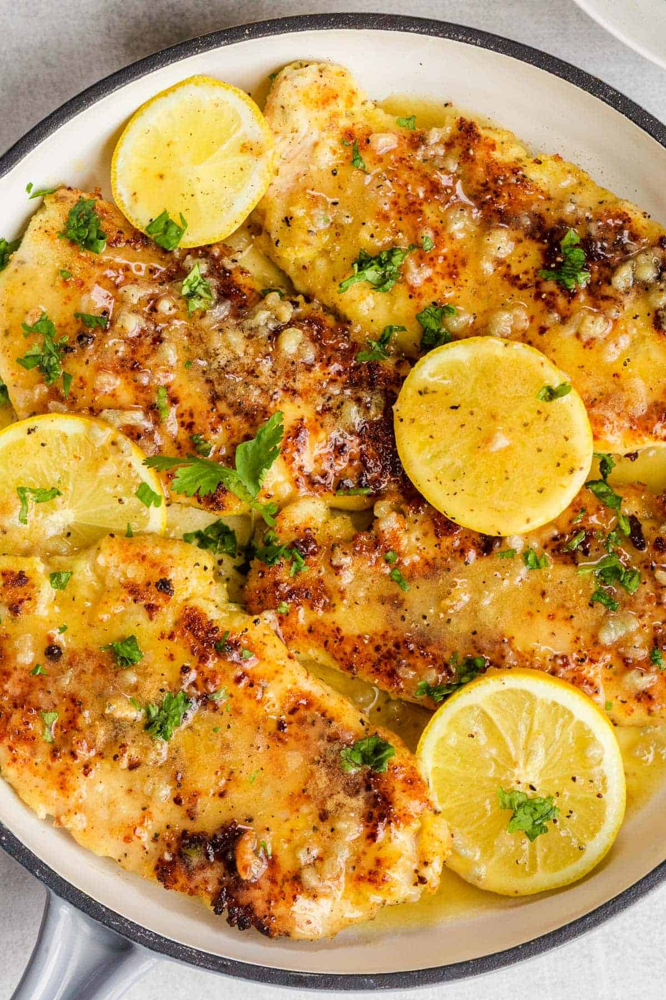

Lemon Chicken (back)

Healthy, Flavorful, Easy!
This one really is all of the things. We hope this healthy lemon chicken recipe felt as miraculously breezy to you as it does to us. Let us know how it all went down! Snap a photo of your baked lemon chicken and maybe even a video of the beautiful people you feed it to. Tag us on Instagram using @themodernproper and #themodernproper. Happy eating!
Ingredients:
- 4 boneless chicken breasts (roughly 2.5 lbs)
- 1/4 cup olive oil
- 2 teaspoons oregano, dried
- 2 teaspoons thyme, dried
- 2 teaspoons garlic powder
- 2 teaspoons salt, divided
- 1/2 teaspoon black pepper
- 1/2 cup dry white wine, such as Sauvignon Blanc, Pinot Grigio or Pinot Gris
- 2 tablespoons minced garlic (6 cloves)
- 1 tablespoon lemon zest (2 lemons)
- 2 tablespoons lemon juice, freshly squeezed
- 1 tablespoon brown sugar
- 1 lemon, cut into 6 slices, optional
Method:
- Heat the oven to 400 degrees F.
- Pat the chicken breasts dry and place them in a 9 x 13 baking dish.
- In a small bowl, mix the olive oil, oregano, thyme, garlic powder, 1 teaspoon salt and pepper to create a thick marinade/paste. Coat the chicken breast with seasoning paste.
- Using the same bowl mix together the white wine, garlic, lemon zest, lemon juice, brown sugar and remaining 1 teaspoon salt. Pour over chicken breast.
- If using, nestle the lemon slices between the chicken bake for 15 minutes, baste the chicken with the pan juice, bake for another 15 minutes or until the internal temperature of the chicken reads 165 F.